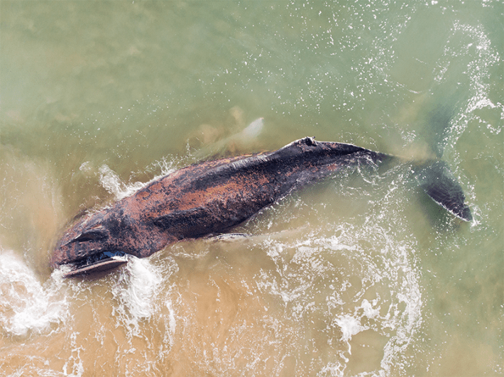

News of a whale stranding evokes the sense of the funereal. When these leviathans wash ashore en masse, the inevitable question is, "Why?"
Our contemporary world presents a gauntlet of hazards that might lead to whales beaching themselves. Things like ear-splitting naval sonar, entanglements with industrial fishing gear, collisions with ships, illness, and pollution are often cited as culprits. But whale strandings have a history that predates our Anthropocene assistance—the fossil record shows that strandings have been happening for at least the past 6 million years. It’s a phenomenon that vexed even Aristotle, who wrote in his Historia Animalium that “it is not known why they sometimes run aground on the seashore: For it is asserted that this happens rather frequently when the fancy takes them, and without any apparent reason.”
But an emerging body of research around the violent churnings of our sun might provide a new theory as to why some whales might stray fatally off course. Solar storms might be throwing whales off their bearings, says Jesse Granger, a Duke University biophysicist who studies how animals orient themselves.
Geomagnetic storms can be powerful, causing radios to crackle and power grids to fail.
The idea that the particles thrown off by our nearest star could be so powerful as to disrupt the navigation of some animals seemed far-fetched a couple of decades ago. Other leading studies at the time pointed to periodic warming trends or wind cycles for their role in mass whale strandings. Granger observed that gray whales trace a well-documented 10,000-mile migration route that hugs the crenulated shorelines along the Pacific coasts of Central and North America. Studying strandings among these massive marine mammals, she thought, might illuminate whether solar storms could actually throw off the navigation system these animals use to travel the complex route.
But there’s at least one problem: The biological mechanisms behind how, exactly, gray and other kinds of whales get their bearings is still unknown. It’s been shown that numerous migratory species operate on some sort of internal compass. But how that compass is wired up to an animal’s nervous system, and how it interacts with Earth’s magnetic field is something scientists studying navigational phenomena don’t yet agree on.
By reviewing 31 years’ worth of data on 187 strandings of otherwise healthy gray whales amassed by the National Oceanic and Atmospheric Administration, and comparing them with solar storm activity over the same period, a paper Granger published presents a compelling correlation. “The gray whales that we were looking at had a fourfold increased likelihood of stranding on a day where there were very high radio-frequency levels coming from the sun,” she says.
Thanks to the electric currents created by the churn of molten iron in the Earth’s outer core, our planet has a magnetic field that tugs the needle northward on even the most rudimentary toy compass. Biologists have long posited that whales and other migratory animals could find their bearings through some sort of internal mechanism that mimics the magnetic components and function of that instrument.

A FATE IN THE STARS: Each year, some whales find themeselves stranded on beaches. Now researchers are wondering if solar flares play a role. Photo by Hector Gago Bellido / Shutterstock.
Problems with following such an internal compass arise when the sun’s corona—the outermost layer of its atmosphere—blasts streams of charged particles and radiation outward, into the solar system. This can create ghostly veils of light around the North and South Poles, the aurora borealis and australis, respectively. From Earth, we see these streams as spots on the sun’s surface, and their ejecta easily traverse the 93 million miles between the two bodies to strum at our planet’s magnetic cocoon. These geomagnetic storms can also be powerful, causing radios to crackle, power grids to fail, and communications satellites to fritz out. They can also cause compass needles to jump erratically.
The sun goes through waxing and waning cycles of magnetic activity that range from about eight to 17 years, with 11 years or so being roughly average. At the height of these periods, the sun’s magnetic poles swap places and whip up all sorts of energy. The shorter the sun’s cycle, the higher and stormier the energy output. As it happens, we’re currently in the midst of this frenetic period of activity—called the solar maximum—which, Granger says, could put her theory regarding the effects of this activity on whale navigation to the test.
Physicist Klaus Vanselow of Kiel University in Germany agrees, and says that we might see an uptick in strandings over the next couple of years as the sun crackles through its latest swing in activity. When Vanselow started researching whether solar storms impacted the navigation of sperm whales about 20 years ago, he says, “many people thought: ‘That’s nonsense.’” In a 2004 study, Vanselow, like Granger, investigated years of data on whale strandings and correlated them with historical cycles of solar activity.
The difference between the two studies was that Vanselow looked at a much longer window of time. Investigating a 291-year span, he found that, of 97 sperm whale stranding events in the North Sea, 90 percent occurred when the sun’s cycle lasted fewer years than the average—meaning periods when solar activity was higher.
Blasts of radio-frequency radiation could be fouling the whales’ internal system of magnetic sensors.
In a subsequent study, Vanselow focused on a 2015 mass stranding along the coast of northern Europe. While researching it, he found that whales' location on the planet also seemed to play a role in how liable they were to strand. The higher the latitude—that is, the closer to the North Pole—Vanselow wrote, the more likely are solar storms to play havoc with the whales’ internal GPS.
"Where the polar lights are seen, that's the region with the most geomagnetic disruptions on the Earth's surface," he tells me. In the area of the North Sea between the Shetland Islands and Norway, for example, solar events can cause short-term shifts in the magnetic field of up to 285 miles, Vanselow found in his study.
Often, whales can course-correct if they’re swimming in the open ocean, as Vanselow notes. But this magnitude of disorientation can be dangerous as whales swim into the shallower North Sea, for example, to hunt squid. Particularly, less experienced whales may face bigger challenges when they encounter scrambled signals in unfamiliar latitudes. Vanselow says that younger whales reared mainly in deep water around the Azores, where magnetic effects are weaker, may be unprepared for the stronger magnetic swings at higher latitudes, leading them to beach more often closer to the poles.
But where Vanselow’s sperm whales seemed stymied by the vicissitudes of Earth’s magnetic field as it shifts and shimmies under the influence of solar flares, Granger says she saw something a little different affecting the orientation of the stranded gray whales in her study.
Her findings showed that, rather than responding to the external magnetic hiccups solar storms create, blasts of radio-frequency radiation caused by the storms could be fouling the whales’ internal system of magnetic sensors. In this view, it’s not that the whales sense these radio waves directly, but rather that the waves jam or scramble whatever magnetic sensors that whales might possess, thereby sending them off course.
Animal navigation can go a little haywire under the sun’s energetic assaults.
Whether the animals are confused by external shifts in magnetism or by how radio-frequency radiation scrambles their sense of magnetic fields, a sensory organ connecting the whales to the planet’s magnetic field simply hasn’t been found yet, says Granger.
There are, however, two primary contenders, she says. One involves a mineral called magnetite, a hugely abundant metal oxide found in all manner of rocks whose crystals act as tiny magnets. Magnetite has been found in the tissue of several animals that somehow orient themselves as they travel—in the beaks of homing pigeons and migratory European robins, for instance, as well as within the brains of sea turtles and olfactory organs of salmon. But researchers still haven’t pieced together how trace amounts of the mineral in any of these species is wired up to their nervous systems, Granger says. Still, studies have shown that in some birds that possess magnetite, the Earth’s magnetic field excites a cranial nerve that provides sensory information to the face.
The other possible locus of navigation involves something called the radical pair hypothesis, which envisions a sort of chemical compass that orients an animal at a molecular level through unpaired electrons that are sensitive to magnetic fields. Such minute reactions could take place in the eye tissue of gray whales, Granger suggests—but, as with magnetite, this is just a guess. In fact, Granger explains, things called magnetotactic bacteria—which produce infinitesimal chains of magnetic particles within their cells—are the only organisms that we know of that truly orient themselves along magnetic fields, growing and swimming toward magnetic north.
Given that we can’t yet put our finger on a specific biological mechanism that acts as a compass, neither Granger nor Vanselow can claim to have solved the mystery of strandings. But many other studies showing that animal navigation can go a little haywire under the sun’s energetic assaults have steadily begun to build a literature of their own. A 2023 study by the University of Michigan’s Eric Gulson-Castillo, for instance, showed how solar storms throw off the navigational hardware of migratory birds. During periods of high solar activity, many species simply seem to stay put rather than risk flying off course. Like Vanselow and Granger, Gulson-Castillo has said he expects our current solar maximum to offer further evidence of the theory. Salmon, too, with their famed treks to spawning sites, are disoriented by magnetic pulses like those encountered during solar activity, a 2020 study suggested.
As researchers continue to investigate the mechanisms that whales and other migratory animals might use to orient themselves geographically, Vanselow is keen to emphasize that solar storms would be only one factor among several dozen others—many caused by humans—that have the capacity to drive whales to their deaths onshore.
“If you know which strandings are triggered by the sun, you can better identify the strandings triggered by anthropogenic influence,” he says. “Otherwise, you can always hide behind the other reasons.” 
Lead image: Oliver.zs / Shutterstock